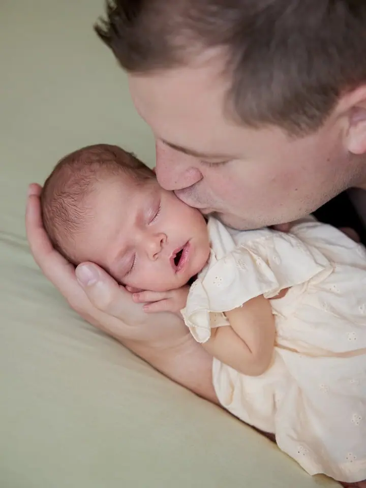
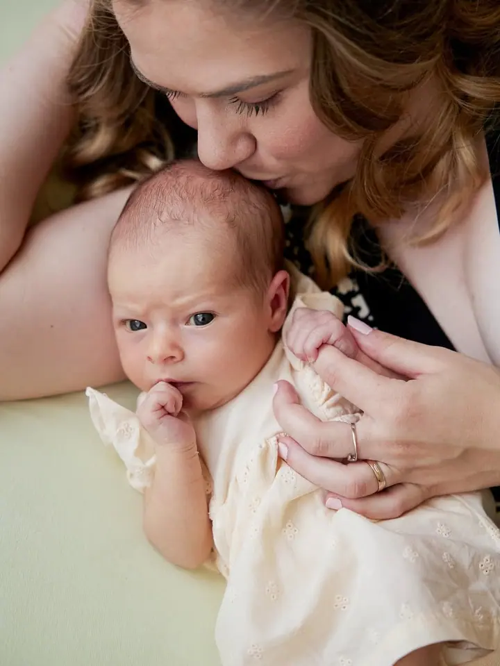
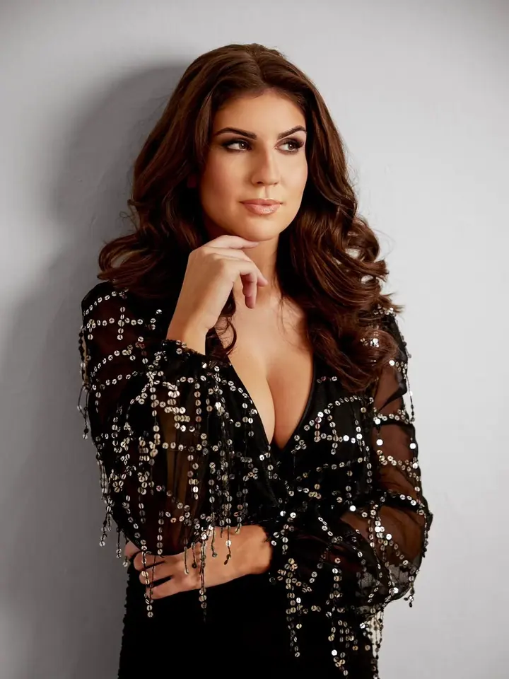

Focení miminek
Miminka do tří měsíců fotím u vás doma, nejlépe do 14 dnů od narození. Fotím lifestyle: v náručí, na gauči nebo v posteli, s mazlením a tulením. Počítejte zhruba se dvěma hodinami.

Jmenuji se Zuzana Jašíčková a na Boskovicku a Blanensku fotím miminka, budoucí maminky i zamilované páry. Ráda fotím u vás doma nebo venku, kde se cítíte nejlíp. A když …
Rezervovat termínJsem svatební a portrétní fotografka z Boskovicka. Fotím těhotenská a rodinná focení, novorozence, páry, svatby, křtiny i business portréty. Nejvíc mě baví obyčejné chvíle, kdy se objímáte, mazlíte a smějete a vůbec nemyslíte na foťák.


Miminka fotím u vás doma. Začneme společnými fotkami s rodiči a staršími sourozenci, pak přijde na řadu miminko samo. Klidně se zastavíme na kojení nebo přebalování, nikam nespěcháme. Bodyčka, wrapy, šatičky pro holčičky i těhotenské šaty vám ráda půjčím.
Fotky, které si vyberete, pečlivě upravím a dostanete je barevně i černobíle, na flešce i vytištěné v dárkovém balení. S oblečením i pózami vám pomůžu, nebojte se zeptat. Doladíme to spolu.
Co fotím
Miminka do tří měsíců fotím u vás doma, nejlépe do 14 dnů od narození. Fotím lifestyle: v náručí, na gauči nebo v posteli, s mazlením a tulením. Počítejte zhruba se dvěma hodinami.
Fotíme venku nebo u vás doma, zhruba 30 až 60 minut. Na těhotenské focení je ideální 30. až 36. týden a těhotenské šaty vám ráda půjčím.
Spíš procházka než focení. S pózami vám pomůžu, ale nejlíp to dopadne, když budete sami sebou.
Fotím svatební den od začátku do konce. Svatební ceník vám ráda pošlu, stačí mi napsat.
Postup
Ozvěte se e-mailem a napište mi, o jaké focení a jaký balíček máte zájem. Domluvíme termín i místo.
Fotíme venku, u vás doma nebo v ateliéru v Boskovicích. Poradím vám s oblečením a během focení i s pózami.
Náhledy vám pošlu do týdne od focení a vy si z nich vyberete své oblíbené fotky.
Upravené fotky posílám do 14 dnů od vašeho výběru, u svateb do 6 týdnů. Dostanete je v elektronické podobě, na flešce i vytištěné.
Otázky
Ideálně do 14 dnů od narození, ale můžeme fotit i tříměsíční miminko. Focení probíhá u vás doma a trvá zhruba 2 až 3 hodiny, protože se miminko mezitím uspává, kojí a přebaluje.
Ideální doba je 30. až 36. týden těhotenství. Vezměte si s sebou fotku z ultrazvuku, klidně i botičky nebo bodyčko pro miminko.
Stačí 1 až 2 outfity. Nejlépe vypadá jednobarevné oblečení, třeba pastelové barvy, černá nebo bílá. Vyhněte se neonovým barvám a velkým nápisům. Šatičky pro holčičky i těhotenské šaty vám můžu půjčit.
Těhotenské, rodinné i párové focení stojí 2 500 Kč, focení miminek a foto příběh 4 000 Kč, křtiny 3 000 Kč. Svatební ceník vám ráda pošlu. Při cestě nad 20 km účtuji cestovné 10 Kč za kilometr.
Ne, neupravené fotky ani RAWy neposkytuji. Všechny fotky, které si vyberete, dostanete upravené a vyretušované, barevně i černobíle.